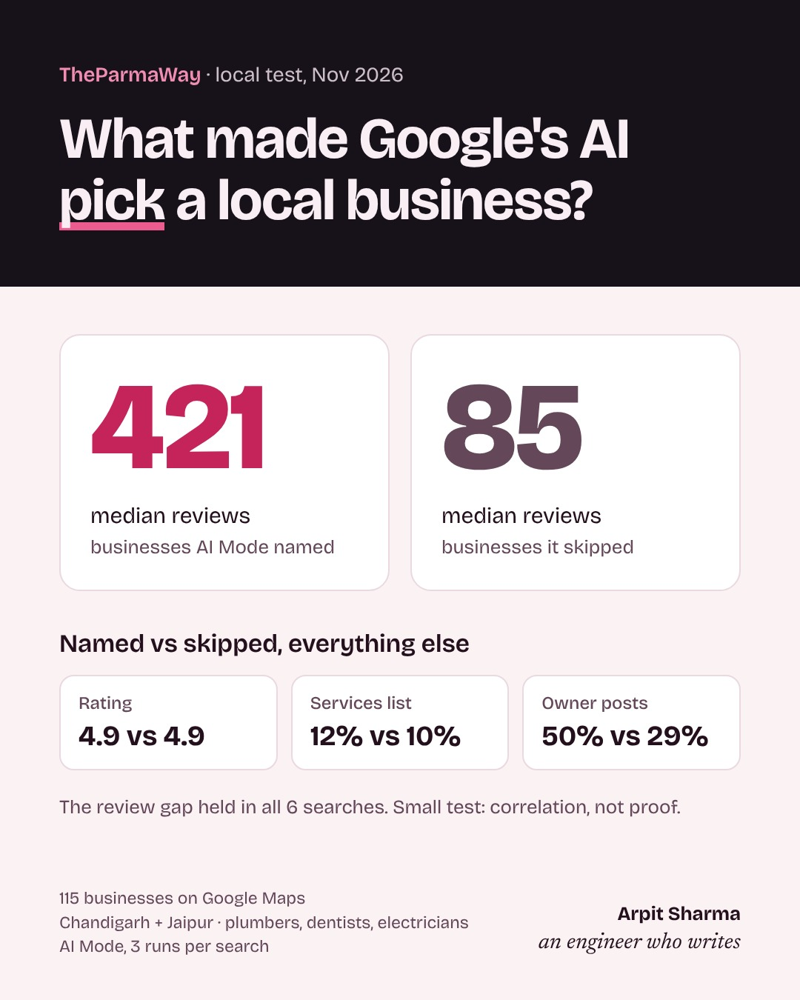

Does Google's AI pick the best-rated local business?
Not in this test. Ratings were nearly identical between the businesses AI Mode named and the ones it skipped: a median of 4.9 stars for both. AI Mode skipped 24 of the 35 businesses rated 5.0.
What did the businesses AI Mode named have in common?
More reviews. In every one of the 6 searches, the businesses AI Mode named had more reviews than the ones it skipped. Of the 5 most-reviewed businesses in each search, AI Mode named 22 of 30.

Results for each search
| Search ("best <trade> in <city>") | Maps listings checked | Named by AI Mode | Median reviews, named | Median reviews, skipped | Named by ChatGPT |
|---|---|---|---|---|---|
| Plumber, Chandigarh | 20 | 7 | 294 | 46 | 5 |
| Dentist, Chandigarh | 19 | 7 | 891 | 315 | 3 |
| Electrician, Chandigarh | 19 | 6 | 82 | 23 | 4 |
| Plumber, Jaipur | 19 | 9 | 349 | 49 | 7 |
| Dentist, Jaipur | 19 | 9 | 709 | 390 | 3 |
| Electrician, Jaipur | 19 | 4 | 299 | 76 | 4 |
| All 6 searches | 115 | 42 | 421 | 85 | 26 |
"Named" means named in at least 1 of 3 runs and also in the Maps listings checked. AI Mode and ChatGPT also named a few businesses that were not in those listings; they are left out of the medians. Business names are left out on purpose: this tests the AI tools, not the businesses.
Does a Services list on the Google profile help?
Not clearly. A Services section showed on 12% of the profiles AI Mode named and 10% of the ones it skipped, and the direction flipped between searches.
What else differed?
- Owner posts on the Google profile: 50% of named profiles had them, 29% of skipped ones. Higher among named businesses in 5 of 6 searches. A possible second signal, weaker than reviews.
- Website: 62% of named businesses had one, 47% of skipped ones.
Is there a minimum number of reviews?
No fixed number. AI Mode named some electricians with under 50 reviews. In Chandigarh, 13 of 19 electricians on Maps had under 100 reviews, so the bar was lower there. Among dentists, where many clinics have 300 to 2,000 reviews, AI Mode skipped clinics with 500 or more.
Does ChatGPT pick the same local businesses?
Mostly. ChatGPT showed the same pattern, a bit weaker: a median of 317 reviews for the businesses it named and 101 for the ones it skipped. It also named a few businesses that were not in the Google Maps listings checked.
What should a local business do?
- Ask every happy customer for a review, every month. The count is compared with the businesses near you.
- Don't chase a perfect rating. In this test, 108 of 115 businesses were rated 4.7 or higher.
- Keep the profile active with owner posts.
- Ask Google AI Mode and ChatGPT your customer's question 3 times and note who gets named.
The full check is in the free AI visibility self-check.
How was this test run?
- Searches: "best plumber / dentist / electrician in Chandigarh / Jaipur", 6 in total.
- Tools: Google AI Mode (one personal account, 3 URL variants) and free ChatGPT (temporary chat), in Chrome from India. Each search 3 times per tool.
- Maps: for each search, the Google Maps results for the same query were opened one by one and logged: rating, number of reviews, website, Services section, owner posts and photos. 115 listings in total (a few duplicates and panels that failed to open were left out).
- Dates: Chandigarh plumbers and dentists on 24 Nov 2026; the rest on 24 and 27 Nov 2026.
What are the limits of this test?
- Small sample: 2 cities, 3 trades, 3 runs per tool. It shows a pattern, not a rule.
- Correlation, not proof: businesses with many reviews may also do everything else well. A before-and-after change on one real profile would be the proof.
- What Maps shows: I logged what the public Maps panel shows. A business may have more details in its Google profile than Maps displays.
- Who ran it: my AI assistant typed and logged the runs in my accounts, following a fixed script.
Check your own business
Use the same method in about 10 minutes with the free AI visibility self-check, and follow TheParmaWay on LinkedIn for each new test.
More TheParmaWay tests
- Google's top 10 vs ChatGPT's sources (1 Nov 2026)
- Gemini vs ChatGPT: which pages each AI links to (4 Nov 2026)
- Do ChatGPT and Perplexity recommend the same Indian brands? (12 Nov 2026)